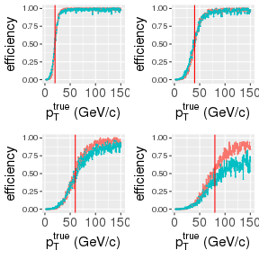
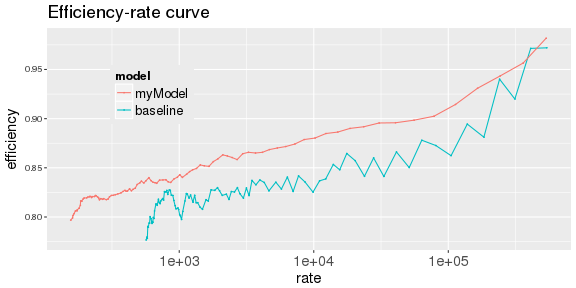
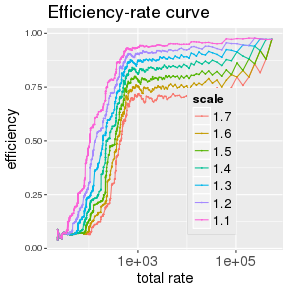
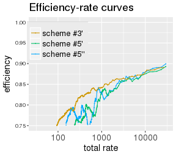
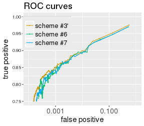
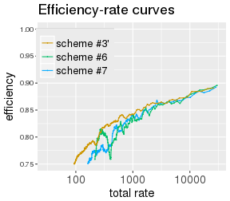

Metrics
Scaling baseline EMTF model for proper comparison
Input compression
Summary
— &twocol
ROC curves built with \(1/p_T ^3\) spectrum\(^*\) and turn-ons for “myModel”\(^{**}\) and EMTF (“baseline”):
*** =left

*** =right
*** =fullwidth
\(^*\) any shape do well for qualitative comparison of the two models (i.e. relative behavior)
\(^{**}\) “myModel” is trained with \(\Delta\phi \times 6\), \(\Delta\theta \times 6\), \(CLCT \times 4\), \(FR \times 4\) (all full precision)
— .class #id
Like for ROCs, efficiency results from convolution of spectrum with turn-on above threshold
Fraction of fakes is replaced with absolute number of events with predicted pT > threshold
Comparing baseline and “myModel” using Andrew's zero bias ntuples:

— &twocol
Baseline model was originally scaled to have ~90% efficiency at any given threshold
Comparing baseline to itself for different scales shows apples-to-oranges problem:
*** =left
*** =right

*** =fullwidth
Baseline put on “myModel” scale (turn-ons cross at 50%) by multiplying thresholds with \(1.43\)
— .class #id
The most important predictors are \(\Delta\phi\) followed by \(clct1\) (!), \(\Delta\theta\), and \(\theta + ring\)
Compression (stipping most/least significant bits - MSB/LSB) should be guided by relative the importance of specific bits
— .class #id
As proposed earlier, I perform input transformations:
Following schemes (inspired by Andrew's talk) for number of bits for predictors are used:
| type | \(\theta\) | \(\Delta\phi_{12}\) | \(\Delta\phi_{23}\) | \(\Delta\phi_{34}\) | \(S^\phi_{12,23}\) | \(S^\phi_{12,34}\) | \(\Delta\theta_{12}\) | \(\Delta\theta_{23}\) | \(\Delta\theta_{34}\) | \(\Delta\theta_{13}\) | \(\Delta\theta_{14}\) | \(\Delta\theta_{24}\) | clct | fr |
|---|---|---|---|---|---|---|---|---|---|---|---|---|---|---|
| #1 | 10 | 10 | 10 | 10 | 1 | 1 | 5 | 5 | 5 | 5 | 5 | 5 | 4,4,4,4 | 1,1,1,1 |
| #2 | 10 | 7 |
5 |
5 |
1 | 1 | 5 | 5 | 5 | 5 | 5 | 5 | 4,4,4,4 | 1,1,1,1 |
| #3 | 5 | 7 | 5 | 5 | 1 | 1 | 0 | 0 | 0 |
0 |
3 |
0 | 4,4,4,4 | 1,1,1,1 |
| #4 | 5 | 7 | 5 | 5 | 1 | 1 | 0 | 0 | 0 | 0 | 3 | 0 | 4,0,0,0 |
1,0,0,0 |
| #5 | 5 | 7 | 5 | 5 | 1 | 1 | 0 | 0 | 0 | 0 | 3 | 0 | 2,0,0,0 |
0,0,0,0 |
(type #0 = “myModel” on previous slides, applies no compression; everything is mode=15 here)
— &twocol
*** =left
*** =right
*** =fullwidth
Bottom-left part of the graphs corresponds to thresholds above ~50 GeV/\(c\) \(\rightarrow\) ignore \(y < 0.8\)
Efficiency drop (0.85 < \(y\) < 0.95, scheme #1 \(\rightarrow\) #2) appears at \(\Delta\phi\) precision truncation
Schemes #2,3, and 4 show almost identical performance for thresholds <50 GeV/\(c\) (top-right)
— &twocol
| type | \(\theta\) | \(\Delta\phi_{12}\) | \(\Delta\phi_{23}\) | \(\Delta\phi_{34}\) | \(S^\phi_{12,23}\) | \(S^\phi_{12,34}\) | \(\Delta\theta_{14}\) | clct | fr |
|---|---|---|---|---|---|---|---|---|---|
| #3' | 7 | 10 |
10 | 10 | 1 | 1 | [3:0] | 4,4,4,4 | 1,1,1,1 |
| #5' | [7:2] | [10:3] |
[5:0] |
[5:0] |
1 | 1 | [2:0] | 2,0,0,0 | 1,0,0,0 |
| #5'' | [7:2] | [10:3] |
[8:3] |
[8:3] |
1 | 1 | [2:0] | 2,0,0,0 | 1,0,0,0 |
*** =left
*** =right

*** =fullwidth
Chopping off LSBs of \(\Delta\phi\) affects high-pT muons (bottom-left) and MSBs - low-pT (top-right)
— &twocol
| type | \(\theta\) | \(\Delta\phi_{12}\) | \(\Delta\phi_{23}\) | \(\Delta\phi_{34}\) | \(S^\phi_{12,23}\) | \(S^\phi_{12,34}\) | \(\Delta\theta_{14}\) | clct | fr |
|---|---|---|---|---|---|---|---|---|---|
| #3' | 7 | 10 | 10 | 10 | 1 | 1 | [3:0] | 4,4,4,4 | 1,1,1,1 |
| #6 | [7:2] | [9:2] |
[8:3] |
[8:3] |
1 | 1 | [2:0] | 2,0,0,0 | 1,0,0,0 |
| #7 | [7:2] | [9:2] |
[7:2] |
[7:2] |
1 | 1 | [2:0] | 2,0,0,0 | 1,0,0,0 |
*** =left

*** =right

*** =fullwidth
Scheme #7 is marginally better than #6; both get close to 'no compression' scheme #3'
— &twocol
| type | \(\theta\) | \(\Delta\phi_{12}\) | \(\Delta\phi_{23}\) | \(\Delta\phi_{34}\) | \(S^\phi_{12,23}\) | \(S^\phi_{12,34}\) | \(\Delta\theta_{14}\) | clct | fr |
|---|---|---|---|---|---|---|---|---|---|
| #3' | 7 | 10 | 10 | 10 | 1 | 1 | [3:0] | 4,4,4,4 | 1,1,1,1 |
| #8 | [7:3] | [10:2] |
[7:2] |
[7:2] |
1 | 1 | [2:0] | 2,0,0,0 | 1,0,0,0 |
| #9 | [7:3] | [9:1] |
[7:2] |
[7:2] |
1 | 1 | [2:0] | 2,0,0,0 | 1,0,0,0 |
*** =left
*** =right
*** =fullwidth
Trade-off: getting better at higer pT (bottom-left) means loosing at low pT (top-right)
— .class #id
The best compression scheme appears to be scheme #7 (inspired by Andrew's proposal):
| type | \(\theta\) | \(\Delta\phi_{12}\) | \(\Delta\phi_{23}\) | \(\Delta\phi_{34}\) | \(S^\phi_{12,23}\) | \(S^\phi_{12,34}\) | \(\Delta\theta_{14}\) | clct | fr |
|---|---|---|---|---|---|---|---|---|---|
| #7 | [7:2] | [9:2] | [7:2] | [7:2] | 1 | 1 | [2:0] | 2,0,0,0 | 1,0,0,0 |
I didn't show most of the performance plots, but I can assure you that \(fr1\) is important
An example of using the new pT LUT is available in my processing tool
The current version of the pT LUT is currently present on my eos:
/store/user/kkotov/lut15.txt
— .class #id